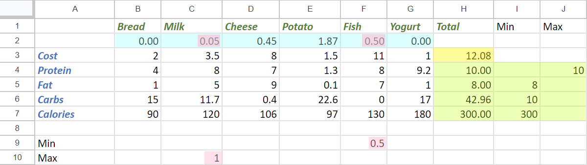
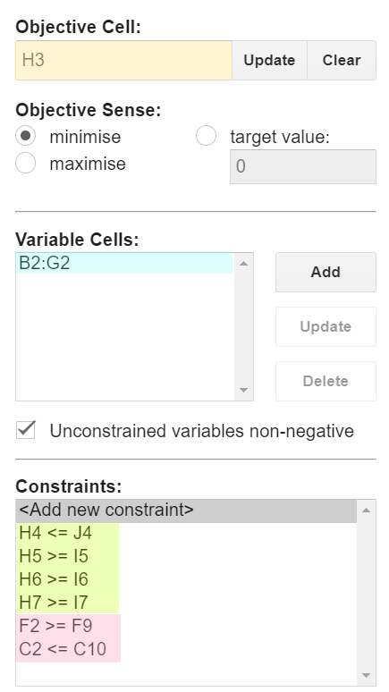

Solving simple optimization problems with Groovy using Commons Math, Choco, JaCoP, Ojalgo, OptaPlanner, Timefold, and OR-Tools
Author: Paul King
Published: 2024-03-10 09:45PM
Introduction
There are many problems involving optimization. We’ll explore a case study which can be solved using linear optimization, also known as linear programming. Linear programming problems optimize a particular linear objective function subject to one or more linear equality and inequality constraints.
We’ll look at such a problem and some libraries and tools which can be used to solve them.
Case Study: Diet Optimization
Let’s look at a case study where we try to minimize the cost of food items in our diet, while still maintaining some overall constraints which we might set for health or dietary preference reasons. The example is inspired by this SAS example, but see the Further Information section for a more elaborate linear programming example, the classic Stigler diet problem, solved using Google OR-Tools.
First, here are six foods with their costs and nutritional values that make up our diet:
Bread 🍞 |
Milk 🥛 |
Cheese 🧀 |
Potato 🥔 |
Fish 🐟 |
Yogurt 🍶 |
|
Cost |
2.0 |
3.5 |
8.0 |
1.5 |
11.0 |
1.0 |
Protein (g) |
4.0 |
8.0 |
7.0 |
1.3 |
8.0 |
9.2 |
Fat (g) |
1.0 |
5.0 |
9.0 |
0.1 |
7.0 |
1.0 |
Carbohydrates (g) |
15.0 |
11.7 |
0.4 |
22.6 |
0.0 |
17.0 |
Calories |
90 |
120 |
106 |
97 |
130 |
180 |
We want to minimize cost, while maintaining optimal nutrition, where optimal will be defined as meeting the following criteria:
-
Must be at least 300 calories
-
Not more than 10 grams of fat
-
Not less than 10 grams of carbohydrates
-
Not less than 8 grams of fat
-
At least 0.5 units of fish
-
No more than 1 unit of milk
Note, we don’t recommend this simplified set of constraints as a real diet, it is only for illustrative purposes for our case study.
Relating this back to our earlier definition of linear programming, our list above represent our linear constraints. Our object function is cost which is determined by the amount of each food multiplied by its cost.
Solving with a spreadsheet solver
This kind of problem is so common that solvers exist even within spreadsheet applications. We’ll show a solution using the OpenSolver Add-on for Google Sheets. But you can do the same thing using Microsoft Excel if you prefer.
First, we fill in the data for our problem. It will be similar to the figure shown below, but initially, the variable cells (blue) and objective cell (yellow) will be blank.

Then, using the OpenSolver extension, we identify by way of cell ranges, our data (blue) and objective (yellow) cells, as well as the constraints.

Then we click "Solve" and it calculates our optimized value.
Let’s look at solving this programmatically using Groovy. Groovy provides a particularly nice environment for scripting solutions to such problems, but for the libraries we are using, it should be possible to use most JVM languages.
Using Apache Commons Math or Hipparchus
Let’s now look at solving this problem using a simplex solver.
We’ll use the SimplexSolver class from Apache Commons
Math which is essentially the same as the one from Hipparchus
(a commons math fork).
We’ll start with a little helper method for defining our constraints:
static scalar(coeffs, rel, double val) {
new LinearConstraint(coeffs as double[], rel, val)
}Next we define our individual constraints and the combined set:
var milk_max = scalar([0, 1, 0, 0, 0, 0], LEQ, 1)
var fish_min = scalar([0, 0, 0, 0, 1, 0], GEQ, 0.5)
var protein = scalar([4.0, 8.0, 7.0, 1.3, 8.0, 9.2], LEQ, 10)
var fat = scalar([1.0, 5.0, 9.0, 0.1, 7.0, 1.0], GEQ, 8)
var carbs = scalar([15.0, 11.7, 0.4, 22.6, 0.0, 17.0], GEQ, 10)
var calories = scalar([90, 120, 106, 97, 130, 180], GEQ, 300)
LinearConstraintSet constraints = [milk_max, fish_min, protein, fat, carbs, calories]Each individual constraint has a coefficient for each food, a relationship, and a value.
Next, we define our cost function, and an additional constraint
to indicate that we can’t buy a negative amount of any food.
The zeroOrMore constraint saves us from doing the long-hand
equivalent, like fish_min but with a minimum of 0, for each food.
var cost = new LinearObjectiveFunction([2.0, 3.5, 8.0, 1.5, 11.0, 1.0] as double[], 0)
var zeroOrMore = new NonNegativeConstraint(true)Now, our solution is found by creating a new solver, and asking it to optimize using our cost function and the constraints. We then print our solution out:
var solution = new SimplexSolver().optimize(cost, constraints, zeroOrMore)
static pretty(int idx, double d) {
d ? [sprintf('%s %.2f', ['🍞', '🥛', '🧀', '🥔', '🐟', '🍶'][idx], d)] : []
}
if (solution != null) {
printf "Cost: %.2f%n", solution.value
println solution.point.indexed().collectMany(this::pretty).join(', ')
}When run, it gives the following output:
Cost: 12.08 🥛 0.05, 🧀 0.45, 🥔 1.87, 🐟 0.50
This is the same solution as what we saw when using the spreadsheet.
You can currently swap between Apache Commons Math and Hipparchus by switching the Maven coordinates of the jar being used on the classpath and changing a few import statements. This may change in future versions, but for now:
-
Using
org.apache.commons:commons-math3:3.6.1gives an older stable version of Commons Math, starting to show its age at 8 years old. -
Using
org.apache.commons:commons-math4-legacy:4.0-beta1gives the latest version of these classes from Apache Commons Math. The naming possibly deserves some explanation. There has been ongoing effort to modularise Commons Math and there are numerous components delivered as a result. The optimisation classes haven’t been worked on yet and are available in the aforementioned artifact. -
Using
org.hipparchus:hipparchus-optim:3.0gives classes from the forked project. For the classes we are using, there is essentially no difference in the fork, but other parts of the library have seen useful updates if you don’t mind having a dependency that isn’t backed by the ASF.
If you don’t like those options, there are many more, here are a few with Groovy solutions in the same repo:
-
For a solution using the SCIP simplex solver in Google OR-Tools, see DietOrTools.groovy
-
For a solution showing Groovy support within SAS, see DietGroovy.sas
-
For a solution using the LP solver in ojAlgo, see DietOjalgo.groovy
-
For a solution using the Choco constraint programming solver, see DietChocoInt.groovy for a solution using scaled integers, and DietChocoReal.groovy for a solution with real numbers using Ibex integration
-
For a solution using the JaCoP constraint programming solver, see DietJacopInt.groovy for a solution using scaled integers, and DietJacopIntKnapsack.groovy for a solution utilizing a Knapsack constraint
Using OptaPlanner or Timefold
@PlanningEntity
@ToString(includePackage = false)
class Food {
String name
@PlanningVariable(valueRangeProviderRefs = "amount")
Integer amount // times 100
double cost, protein, fat, carbs, calories
}@PlanningSolution
class DietSolution {
@PlanningEntityCollectionProperty
List<Food> foods
@ValueRangeProvider(id = "amount")
CountableValueRange<Integer> getAmount() {
ValueRangeFactory.createIntValueRange(0, 200, 5)
}
@PlanningScore
HardSoftScore score
void display() {
foods.eachWithIndex { f, idx ->
var emoji = ['🍞', '🥛', '🧀', '🥔', '🐟', '🍶']
println "${emoji[idx]} $f.name: ${f.amount / 100}"
}
for (name in ['fat', 'carbs', 'protein', 'calories', 'cost']) {
var total = foods.sum{ f -> f."$name" * f.amount / 100 }
printf "Total %s: %.2f%n", name, total
}
println "Score: $score"
}
}class DietConstraintProvider implements ConstraintProvider {
@Override
Constraint[] defineConstraints(ConstraintFactory factory) {
new Constraint[]{
maxField(factory, 'protein', 10),
minField(factory, 'fat', 8),
minField(factory, 'carbs', 10),
minField(factory, 'calories', 300),
minFood(factory, 'Fish', 50),
maxFood(factory, 'Milk', 100),
minCost(factory),
}
}
private static int amountOf(Food f, String name) {
(f."$name" * f.amount).toInteger()
}
private static Constraint minField(ConstraintFactory factory, String fieldName, double minAmount) {
ToIntFunction<Food> amount = f -> amountOf(f, fieldName)
factory.forEach(Food)
.groupBy(sum(amount))
.filter(fs -> fs < minAmount * 100)
.penalize(ONE_HARD)
.asConstraint("Min $fieldName")
}
private static Constraint maxField(ConstraintFactory factory, String fieldName, double maxAmount) {
ToIntFunction<Food> amount = f -> amountOf(f, fieldName)
factory.forEach(Food)
.groupBy(sum(amount))
.filter(fs -> fs > maxAmount * 100)
.penalize(ONE_HARD)
.asConstraint("Max $fieldName")
}
private static Constraint minFood(ConstraintFactory factory, String foodName, double minAmount) {
factory.forEach(Food)
.filter(f -> f.name == foodName && f.amount < minAmount)
.penalize(ONE_HARD)
.asConstraint("Min $foodName")
}
private static Constraint maxFood(ConstraintFactory factory, String foodName, double maxAmount) {
factory.forEach(Food)
.filter(f -> f.name == foodName && f.amount > maxAmount)
.penalize(ONE_HARD)
.asConstraint("Max $foodName")
}
private static ToIntFunction<Food> totalCost = f -> (f.cost * f.amount).toInteger()
private static Constraint minCost(ConstraintFactory factory) {
factory.forEach(Food)
.filter(f -> f.amount > 0)
.groupBy(sum(totalCost))
.penalize(ONE_SOFT, fs -> fs >> 2)
.asConstraint('Min cost')
}
}def unsolved = new DietSolution(foods: [
new Food(name: 'Bread', cost: 2.0, protein: 4.0, fat: 1.0, carbs: 15.0, calories: 90),
new Food(name: 'Milk', cost: 3.5, protein: 8.0, fat: 5.0, carbs: 11.7, calories: 120),
new Food(name: 'Cheese', cost: 8.0, protein: 7.0, fat: 9.0, carbs: 0.4, calories: 106),
new Food(name: 'Potato', cost: 1.5, protein: 1.3, fat: 0.1, carbs: 22.6, calories: 97),
new Food(name: 'Fish', cost: 11.0, protein: 8.0, fat: 7.0, carbs: 0.0, calories: 130),
new Food(name: 'Yogurt', cost: 1.0, protein: 9.2, fat: 1.0, carbs: 17.0, calories: 180)
])
def construction = new ConstructionHeuristicPhaseConfig(constructionHeuristicType: FIRST_FIT)
def moveSelector = new UnionMoveSelectorConfig([
new ChangeMoveSelectorConfig(),
new SwapMoveSelectorConfig()
])
def localSearch = new LocalSearchPhaseConfig(localSearchType: VARIABLE_NEIGHBORHOOD_DESCENT,
moveSelectorConfig: moveSelector)
def config = new SolverConfig()
.withSolutionClass(DietSolution)
.withEntityClasses(Food)
.withConstraintProviderClass(DietConstraintProvider)
.withPhases(construction, localSearch)
.withTerminationSpentLimit(Duration.ofSeconds(10))
def factory = SolverFactory.create(config)
def solver = factory.buildSolver()
def solved = solver.solve(unsolved)
solved.display()It has this output when run:
08:17:05.202 [main] INFO a.t.s.core.impl.solver.DefaultSolver - Solving started: time spent (25), best score (-6init/0hard/0soft), environment mode (REPRODUCIBLE), move thread count (NONE), random (JDK with seed 0). 08:17:05.385 [main] INFO a.t.s.c.i.c.DefaultConstructionHeuristicPhase - Construction Heuristic phase (0) ended: time spent (210), best score (-1hard/-521soft), score calculation speed (1355/sec), step total (6). 08:17:15.175 [main] INFO a.t.s.c.i.l.DefaultLocalSearchPhase - Local Search phase (1) ended: time spent (10000), best score (-1hard/-261soft), score calculation speed (155967/sec), step total (1030). 08:17:15.176 [main] INFO a.t.s.core.impl.solver.DefaultSolver - Solving ended: time spent (10000), best score (-1hard/-261soft), score calculation speed (152685/sec), phase total (2), environment mode (REPRODUCIBLE), move thread count (NONE). 🍞 Bread: 0.6 🥛 Milk: 0.6 🧀 Cheese: 0 🥔 Potato: 0.4 🐟 Fish: 0.5 🍶 Yogurt: 1.05 Total fat: 8.19 Total carbs: 42.91 Total protein: 21.38 Total calories: 418.80 Total cost: 10.45 Score: -1hard/-261soft
It has this output when run:
🍞 Bread: 0 🥛 Milk: 0 🧀 Cheese: 0.5 🥔 Potato: 1.9 🐟 Fish: 0.5 🍶 Yogurt: 0 Total fat: 8.19 Total carbs: 43.14 Total protein: 9.97 Total calories: 302.30 Total cost: 12.35 Score: 0hard/-308soft
Further Information
-
OR-Tools linear optimization
-
A related but more elaborate example based on the Stigler Diet problem using Google OR-Tools
-
A Python Diet example also using Google OR-Tools
-
GitHub repos containing sample code: Diet DietOptaPlanner DietTimeflow
Conclusion
We have looked at using Groovy and a few linear optimization libraries to solve a diet case study.